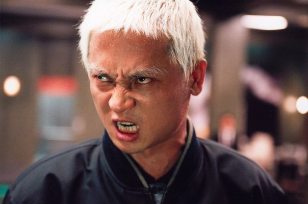

#1109 Lady Vengeance
Alternativ: Sympathy for Lady Vengeance (Englischer Titel)

 IMDB-Wertung: 7.6 / 10
IMDB-Wertung: 7.6 / 10  Metascore: 75
Metascore: 75 
Die 19-jährige Geum-ja wird wegen der Entführung und dem anschließenden Mord an einem kleinen Jungen zu 13 Jahren Gefängnis verurteilt. Die Öffentlichkeit ist geschockt über das grausame Verbrechen und die Tatsache, dass die vermeintliche Täterin eine so junge und hübsche Frau ist, der niemand ein derartig kaltblütiges Verbrechen zugetraut hätte. Während der Haftzeit macht sich die hilfsbereite Geum-ja schnell sehr beliebt bei ihren Mithäftlingen und arbeitet die ganzen Jahre über fieberhaft an einem Plan, um sich an ihrem ehemaligen Lehrer Mr. Baek zu rächen, dem sie sich einst anvertraut hatte. Als Geum-ja schließlich aus dem Gefängnis entlassen wird, macht sie sich auf die Suche nach ihrem Ex-Komplizen und startet mit Hilfe von ehemaligen Mitgefangenen einen Rachefeldzug.
Jahr: 2005
Dauer: 112 Minuten
FSK: 16
Land: Süd-Korea Studio: 3L FilmverleihTonspuren:
Untertitel:
Auflösung: 1080p (1920x816) Größe: 10137 MB
Genre: Krimi, Drama, Thriller
Regisseur: Chan-wook Park
Drehbuch: Seo-kyeong Jeong, Chan-wook Park, Chan-wook Park
Soundtrack: Seung-Hyun Choi, Yeong-wook Jo
Darsteller:
- Yeong-ae Lee als Geum-ja Lee
 Min-sik Choi als Mr. Baek
Min-sik Choi als Mr. Baek- Hye-jeong Kang als Tv announcer
- Bu-seon Kim als So-young Woo
-  Byeong-ok Kim als Preacher
- Seung-shin Lee als Yi-jeong Park
 Dal-su Oh als Mr. Chang
Dal-su Oh als Mr. Chang Ha-kyun Shin als A hired assassin 2
Ha-kyun Shin als A hired assassin 2 Kang-ho Song als A hired assassin 1
Kang-ho Song als A hired assassin 1- Jin-seo Yoon als A prisoner
- Ji-tae Yu als A grown-up Won-mo
- Shi-hoo Kim als Geun-shik
- Yea-young Kwon als Jenny
- Tony Barry als StepFather, Australian
- Anne Cordiner als StepMother, Australian
- Su-hee Go als Ma-nyeo
- Dae-yeon Lee als Prison head
- Su-gyeong Lim als A prison officer
- Il-woo Nam als Detective Choi
- Kwang-rok Oh als Se-hyun's Father
- Mi-ran Ra als Su-hee Oh
- Seung-wan Ryoo als A passerby
- Yeong-ju Seo als Yang-hee Kim
Datei: X:\HD-Eastern-Classic(A-M)\Lady Vengeance (2005, FSK16, 1920x816).mkv seit 21.05.2015
Festplatte: HD Eastern+Western
 Es gibt insgesamt 63 Filme in der Gruppe 'HD-Eastern-Classic(A-M)'
Es gibt insgesamt 63 Filme in der Gruppe 'HD-Eastern-Classic(A-M)'